Multi-logistic model of COVID-19 dynamics
Model, code, results
Project maintained by algmaknick Hosted on GitHub Pages — Theme by mattgraham
World

World data at: 2020-05-09
+3 day model MAPE: 0.044019
model: bi-logisticQ
coeffs: [ 4.07968893e+06 1.18062257e-06 7.38846502e+01 -8.44079159e+04]
S.Korea scenario coeffs: [0.35416971, 0.02606324, 4.35859408, 19.30413219]
rational stdev: 0.179638
forecast at the end of period: +308 days
deltaDaycases: 1178
total cases: 5694905 ± 1023019
total death: 389359 ± 209830
tri-logisticQ approximation splitting points: 26,54
trend coefficient of determination: 0.957216
intercept_: -9.890425229004336
coeffs_: [ 0. -0.26614025 0.00124975]
trend1 coefficient of determination: 0.900515
intercept_: -20.622215746086294
coeffs_: [ 0. 0.23801537 -0.00236922]
trend coefficient of determination: 0.993121
intercept_: -2.3479222155626758
coeffs_: [ 0. -0.30600156 0.00140207]
European Union

European Union data at: 2020-05-09
+3 day model MAPE: 0.014959
model: logisticQ
coeffs: [ 1.06162329e+06 9.02895258e-07 4.90535854e+01 -1.33514781e+05]
S.Korea scenario coeffs: [0.35416971, 0.02606324, 4.35859408, 19.30413219]
rational stdev: 0.428575
forecast at the end of period: +203 days
deltaDaycases: 287
total cases: 1432963 ± 614131
total death: 150780 ± 193861
trend coefficient of determination: 0.987680
intercept_: -2.9919925241480545
coeffs_: [ 0. -0.33029909 0.00171597]
USA
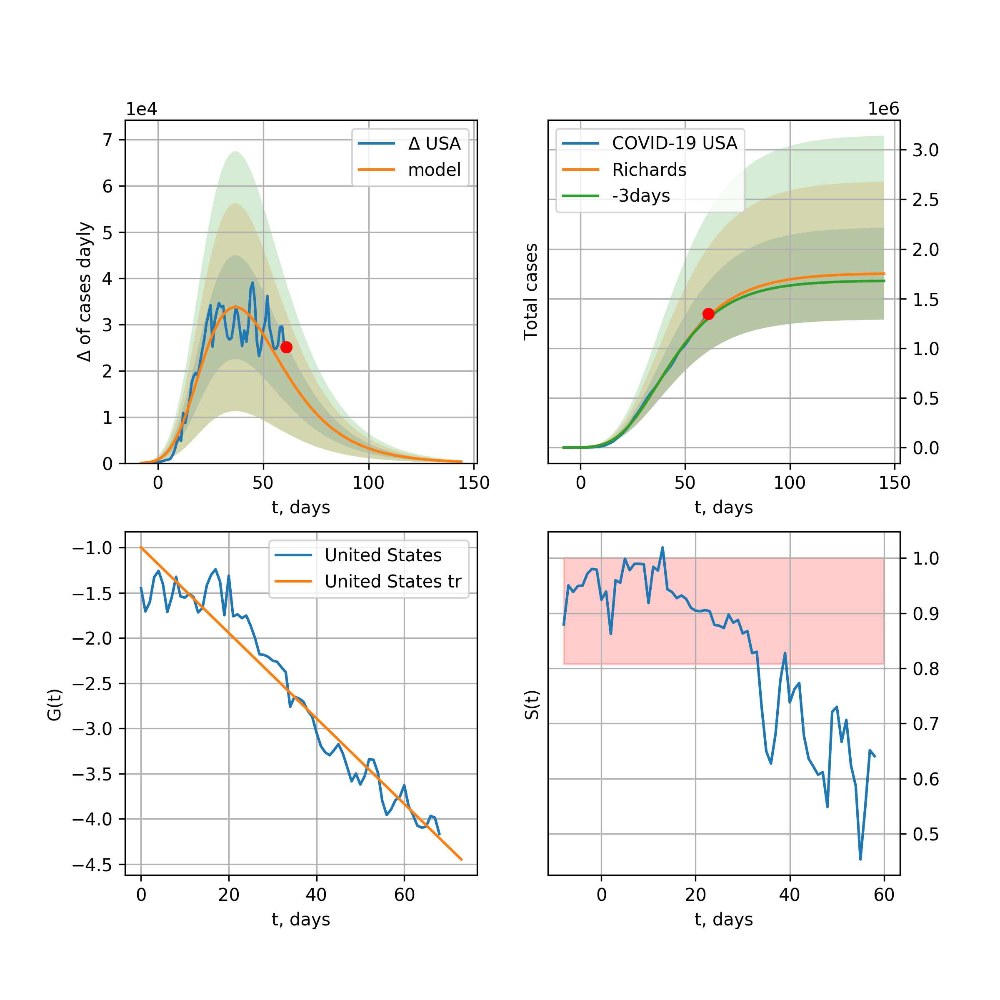
USA data at: 2020-05-09
+3 day model MAPE: 0.016119
model: Richards
coeffs: [ 1.75766251e+06 3.98804794e+00 -4.51517388e+01 1.31710496e-02]
rational stdev: 0.264588
forecast at the end of period: +84 days
deltaDaycases: 329
total cases: 1751541 ± 463436
total death: 104050 ± 82591
trend coefficient of determination: 0.936829
intercept: -0.996999
slope: -0.047284
Spain

Spain data at: 2020-05-09
+3 day model MAPE: 0.011938
model: Richards
coeffs: [ 2.75563023e+05 6.28379463e+00 -3.84083056e+01 1.08922550e-02]
rational stdev: 0.282538
forecast at the end of period: +42 days
deltaDaycases: 84
total cases: 274361 ± 77517
total death: 27644 ± 23431
trend coefficient of determination: 0.940133
intercept: -0.785218
slope: -0.059706
Italy

Italy data at: 2020-05-09
+3 day model MAPE: 0.003483
model: Richards
coeffs: [ 2.32899177e+05 5.34116523e+00 -4.69604860e+01 1.15059451e-02]
rational stdev: 0.086149
forecast at the end of period: +42 days
deltaDaycases: 82
total cases: 231593 ± 19951
total death: 32250 ± 8334
trend coefficient of determination: 0.980465
intercept: -1.103433
slope: -0.056988
United Kingdom

United Kingdom data at: 2020-05-09
+3 day model MAPE: 0.021010
model: Richards
coeffs: [ 2.89306055e+05 3.94412308e+00 -5.17875340e+01 1.31254551e-02]
rational stdev: 0.134080
forecast at the end of period: +84 days
deltaDaycases: 63
total cases: 288116 ± 38630
total death: 42277 ± 17005
trend coefficient of determination: 0.912962
intercept: -1.407007
slope: -0.043972
France

France data at: 2020-05-09
+3 day model MAPE: 0.008489
model: Richards
coeffs: [1.76408099e+05 2.36804916e-01 2.48768325e+01 4.88479409e-01]
rational stdev: 0.203334
forecast at the end of period: +38 days
deltaDaycases: 4
total cases: 176369 ± 35861
total death: 26267 ± 16022
trend coefficient of determination: 0.952325
intercept: -3.571661
slope: -0.117382
Germany

Germany data at: 2020-05-09
+3 day model MAPE: 0.011273
model: logisticQ
coeffs: [ 1.64881950e+05 8.86005097e-07 3.04607168e+01 -1.58274428e+05]
S.Korea scenario coeffs: [0.35416971, 0.02606324, 4.35859408, 19.30413219]
rational stdev: 0.372127
forecast at the end of period: +126 days
deltaDaycases: 59
total cases: 222456 ± 82782
total death: 9802 ± 10942
trend coefficient of determination: 0.993407
intercept_: -4.653222142035867
coeffs_: [ 0. -0.33868723 0.00229137]
Turkey

Turkey data at: 2020-05-09
+3 day model MAPE: 0.009306
model: Richards
coeffs: [1.50668336e+05 7.28344536e-01 2.07846384e-01 1.16719162e-01]
rational stdev: 0.296483
forecast at the end of period: +98 days
deltaDaycases: 0
total cases: 150664 ± 44669
total death: 4108 ± 3653
trend coefficient of determination: 0.791892
intercept: -1.474405
slope: -0.074501
Russia

Russia data at: 2020-05-09
+3 day model MAPE: 0.025523
model: Richards
coeffs: [ 1.01480520e+06 1.21142784e+00 -4.43125039e+01 2.89391800e-02]
rational stdev: 0.071050
forecast at the end of period: +168 days
deltaDaycases: 167
total cases: 1010107 ± 71768
total death: 9288 ± 1979
trend coefficient of determination: 0.870587
intercept: -1.724963
slope: -0.029684
Iran

Iran data at: 2020-05-09
+3 day model MAPE: 0.024431
model: bi-logisticQ
coeffs: [ 9.28448857e+04 6.99627680e-07 3.76298401e+01 -1.64768386e+05]
S.Korea scenario coeffs: [0.35, 0.5, 3, 1]
rational stdev: 0.321360
forecast at the end of period: +98 days
deltaDaycases: 66
total cases: 131548 ± 42274
total death: 8160 ± 7866
bi-logisticQ approximation splitting point: 17
trend coefficient of determination: 0.987745
intercept_: -2.720144864989817
coeffs_: [ 0. -0.61067547 0.00823538]
trend coefficient of determination: 0.978487
intercept_: -8.139777950624238
coeffs_: [ 0. -0.17944388 0.00098939]
Brazil

Brazil data at: 2020-05-09
+3 day model MAPE: 0.072278
model: logisticQ
coeffs: [ 4.75545422e+05 8.88385531e-06 6.85620552e+01 -9.71391216e+03]
S.Korea scenario coeffs: [0.35416971, 0.02606324, 4.35859408, 19.30413219]
rational stdev: 0.410943
forecast at the end of period: +343 days
deltaDaycases: 78
total cases: 642177 ± 263898
total death: 43848 ± 54057
trend coefficient of determination: 0.856538
intercept_: -3.955652845359074
coeffs_: [ 0. -0.3071708 0.00227228]
Canada

Canada data at: 2020-05-09
+3 day model MAPE: 0.007610
model: Richards
coeffs: [ 1.06859317e+05 3.69923055e+00 -7.14966019e+01 1.17849232e-02]
rational stdev: 0.187549
forecast at the end of period: +98 days
deltaDaycases: 30
total cases: 106170 ± 19912
total death: 7359 ± 4140
trend coefficient of determination: 0.931653
intercept: -1.501588
slope: -0.047112
Belgium
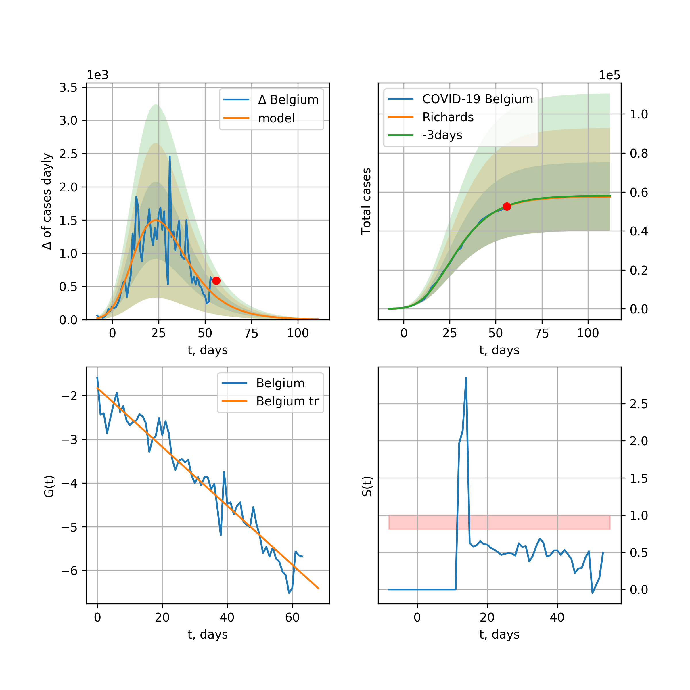
Belgium data at: 2020-05-09
+3 day model MAPE: 0.003555
model: Richards
coeffs: [ 5.76895932e+04 6.82757807e-01 -5.86358820e+00 1.08843489e-01]
rational stdev: 0.305844
forecast at the end of period: +56 days
deltaDaycases: 6
total cases: 57606 ± 17618
total death: 9398 ± 8622
trend coefficient of determination: 0.935437
intercept: -1.829439
slope: -0.067388
Peru

Peru data at: 2020-05-09
+3 day model MAPE: 0.042296
model: logisticQ
coeffs: [ 1.15849951e+05 5.61118214e-06 5.29355240e+01 -1.92482473e+04]
S.Korea scenario coeffs: [0.35416971, 0.02606324, 4.35859408, 19.30413219]
rational stdev: 0.364690
forecast at the end of period: +252 days
deltaDaycases: 35
total cases: 156242 ± 56980
total death: 4359 ± 4769
trend coefficient of determination: 0.969035
intercept_: -3.6008046720810247
coeffs_: [ 0. -0.29369826 0.00209914]
Netherlands

Netherlands data at: 2020-05-09
+3 day model MAPE: 0.004054
model: Richards
coeffs: [4.65170089e+04 5.31464985e-01 2.46089515e+00 1.35171893e-01]
rational stdev: 0.204730
forecast at the end of period: +42 days
deltaDaycases: 15
total cases: 46315 ± 9482
total death: 5925 ± 3639
trend coefficient of determination: 0.969452
intercept: -1.293686
slope: -0.074956
India

India data at: 2020-05-09
+3 day model MAPE: 0.087348
model: logisticQ
coeffs: [ 1.41026215e+05 7.91474494e-05 3.36210178e+01 -1.12695934e+03]
S.Korea scenario coeffs: [0.35416971, 0.02606324, 4.35859408, 19.30413219]
rational stdev: 0.157181
forecast at the end of period: +154 days
deltaDaycases: 292
total cases: 183519 ± 28845
total death: 6149 ± 2899
trend coefficient of determination: 0.975446
intercept_: -9.347576893446664
coeffs_: [ 0. -0.21884129 0.00274531]
Switzerland

Switzerland data at: 2020-05-09
+3 day model MAPE: 0.005696
model: logisticQ
coeffs: [ 2.94476388e+04 9.43696552e-07 2.55285509e+01 -1.59936460e+05]
S.Korea scenario coeffs: [0.35416971, 0.02606324, 4.35859408, 19.30413219]
rational stdev: 0.355710
forecast at the end of period: +98 days
deltaDaycases: 14
total cases: 39690 ± 14118
total death: 2401 ± 2562
trend coefficient of determination: 0.985548
intercept_: -3.5584667361487234
coeffs_: [ 0. -0.34289208 0.0023295 ]
Ecuador

Ecuador data at: 2020-05-09
+3 day model MAPE: 0.150561
model: logisticQ
coeffs: [ 3.51502260e+04 7.64422534e-07 3.78971083e+01 -1.08310608e+05]
S.Korea scenario coeffs: [0.35416971, 0.02606324, 4.35859408, 19.30413219]
rational stdev: 0.364330
forecast at the end of period: +196 days
deltaDaycases: 15
total cases: 47216 ± 17202
total death: 2788 ± 3047
trend coefficient of determination: 0.690047
intercept_: -5.37499650629104
coeffs_: [ 0. -0.32622385 0.00301136]
Portugal

Portugal data at: 2020-05-09
+3 day model MAPE: 0.012384
model: Richards
coeffs: [ 2.90054956e+04 6.24173519e+00 -3.51466076e+01 1.16794715e-02]
rational stdev: 0.683723
forecast at the end of period: +56 days
deltaDaycases: 3
total cases: 28964 ± 19803
total death: 1190 ± 2440
trend coefficient of determination: 0.880803
intercept: -0.765432
slope: -0.063285
Saudi Arabia

Saudi Arabia data at: 2020-05-09
+3 day model MAPE: 0.051234
model: logisticQ
coeffs: [ 5.57992493e+04 1.67942412e-05 5.32639684e+01 -6.63385813e+03]
S.Korea scenario coeffs: [0.35416971, 0.02606324, 4.35859408, 19.30413219]
rational stdev: 0.350081
forecast at the end of period: +210 days
deltaDaycases: 112
total cases: 73346 ± 25677
total death: 472 ± 495
trend coefficient of determination: 0.817796
intercept_: -4.294351324633505
coeffs_: [ 0. -0.23557774 0.00153169]
Sweden

Sweden data at: 2020-05-09
+3 day model MAPE: 0.012127
model: Richards
coeffs: [ 4.19811358e+04 8.90047854e-01 -3.13862226e+01 4.40227403e-02]
rational stdev: 0.281432
forecast at the end of period: +98 days
deltaDaycases: 17
total cases: 41532 ± 11688
total death: 5159 ± 4355
trend coefficient of determination: 0.808700
intercept: -1.449436
slope: -0.041655
Pakistan

Pakistan data at: 2020-05-09
+3 day model MAPE: 0.033918
model: bi-logisticQ
coeffs: [ 4.51325915e+04 5.22299699e-06 6.10158487e+01 -1.71298715e+04]
S.Korea scenario coeffs: [0.35416971, 0.02606324, 4.35859408, 19.30413219]
rational stdev: 0.422516
forecast at the end of period: +84 days
deltaDaycases: 5
total cases: 45483 ± 19217
total death: 986 ± 1249
bi-logisticQ approximation splitting point: 20
trend coefficient of determination: 0.391568
intercept_: -3.9808806978581046
coeffs_: [ 0. -0.04620278 -0.00453428]
trend coefficient of determination: 0.936260
intercept_: -3.856647542116999
coeffs_: [ 0. -0.24367244 0.00165147]
Ireland

Ireland data at: 2020-05-09
+3 day model MAPE: 0.004861
model: logisticQ
coeffs: [ 2.33795986e+04 1.01546135e-05 3.45896209e+01 -1.31210001e+04]
S.Korea scenario coeffs: [0.35416971, 0.02606324, 4.35859408, 19.30413219]
rational stdev: 0.333973
forecast at the end of period: +140 days
deltaDaycases: 20
total cases: 31346 ± 10468
total death: 1991 ± 1994
trend coefficient of determination: 0.981086
intercept_: -3.6513742740888286
coeffs_: [ 0. -0.29038539 0.00189339]
Mexico

Mexico data at: 2020-05-09
+3 day model MAPE: 0.012955
model: Richards
coeffs: [ 3.17897035e+05 4.50769964e-01 -3.25489412e+01 5.73342632e-02]
rational stdev: 0.131145
forecast at the end of period: +238 days
deltaDaycases: 42
total cases: 316267 ± 41476
total death: 31692 ± 12468
trend coefficient of determination: 0.831642
intercept: -2.025262
slope: -0.031236
Singapore
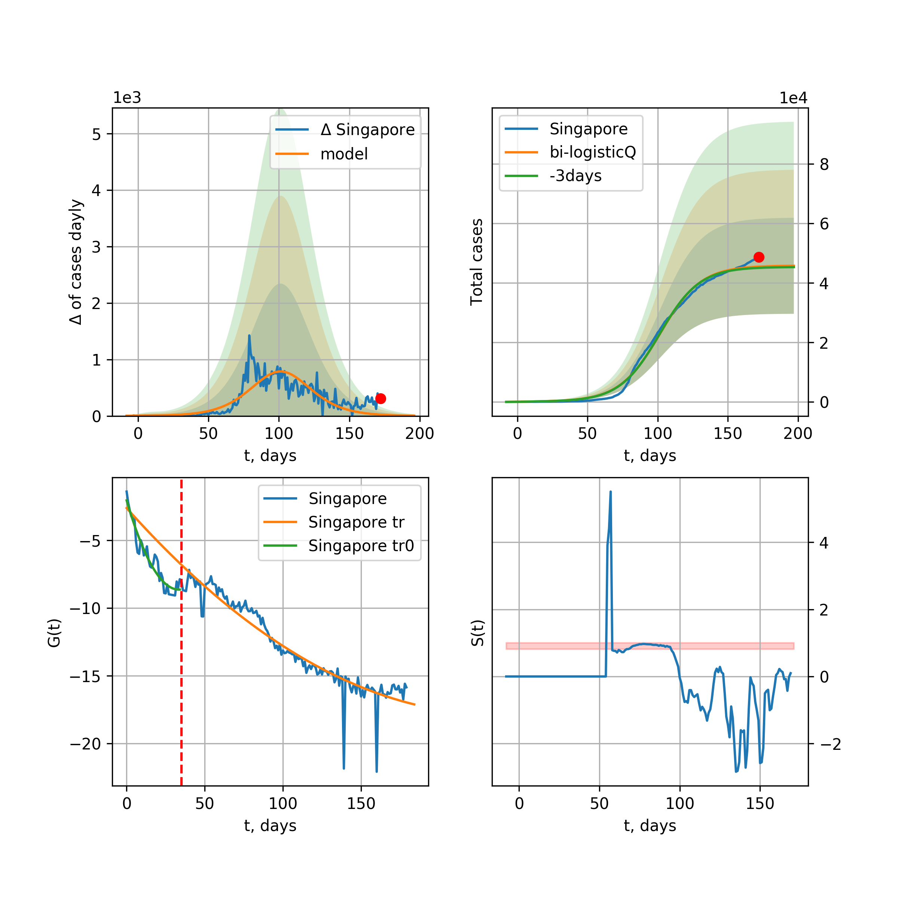
Singapore data at: 2020-05-09
+3 day model MAPE: 0.079027
model: bi-logisticQ
coeffs: [ 2.35408956e+04 2.95559332e-05 8.45595486e+01 -5.28621006e+03]
S.Korea scenario coeffs: [0.35, 0.5, 4.0, 1.0]
rational stdev: 0.406499
forecast at the end of period: +98 days
deltaDaycases: 0
total cases: 23639 ± 9609
total death: 21 ± 25
bi-logisticQ approximation splitting point: 35
trend coefficient of determination: 0.914568
intercept_: -2.036640634366525
coeffs_: [ 0. -0.39517788 0.00592335]
trend coefficient of determination: 0.910187
intercept_: -9.543338733314867
coeffs_: [ 0. 0.07905278 -0.00113556]
Chile

Chile data at: 2020-05-09
+3 day model MAPE: 0.082414
model: Richards
coeffs: [ 3.98383549e+05 8.52087863e-01 -1.25348670e+02 1.87574685e-02]
rational stdev: 0.416563
forecast at the end of period: +336 days
deltaDaycases: 82
total cases: 393227 ± 163803
total death: 4391 ± 5487
trend coefficient of determination: 0.006174
intercept: -2.718697
slope: -0.006406
Israel

Israel data at: 2020-05-09
+3 day model MAPE: 0.002301
model: Richards
coeffs: [ 1.72597873e+04 7.37568357e+00 -3.98022692e+01 1.16929968e-02]
rational stdev: 0.135684
forecast at the end of period: +42 days
deltaDaycases: 1
total cases: 17241 ± 2339
total death: 258 ± 105
trend coefficient of determination: 0.878843
intercept: -1.123295
slope: -0.086279
Austria

Austria data at: 2020-05-09
+3 day model MAPE: 0.006167
model: logisticQ
coeffs: [ 1.51899519e+04 1.19670540e-06 2.33337072e+01 -1.66209288e+05]
S.Korea scenario coeffs: [0.35416971, 0.02606324, 4.35859408, 19.30413219]
rational stdev: 0.320979
forecast at the end of period: +84 days
deltaDaycases: 4
total cases: 20522 ± 6587
total death: 797 ± 767
trend coefficient of determination: 0.980908
intercept_: -2.767708921436421
coeffs_: [ 0. -0.35588273 0.00243716]
Belarus

Belarus data at: 2020-05-09
+3 day model MAPE: 0.003146
model: Richards
coeffs: [ 5.17747838e+04 1.64323948e+00 -4.42444261e+01 2.96332173e-02]
rational stdev: 0.133320
forecast at the end of period: +98 days
deltaDaycases: 18
total cases: 51397 ± 6852
total death: 293 ± 117
trend coefficient of determination: 0.772998
intercept: -1.696024
slope: -0.047132
Japan

Japan data at: 2020-05-09
+3 day model MAPE: 0.015080
model: Richards
coeffs: [1.56935491e+04 1.00654205e-01 7.93124469e+01 1.63664547e+00]
rational stdev: 0.582720
forecast at the end of period: +63 days
deltaDaycases: 0
total cases: 15693 ± 9144
total death: 608 ± 1062
trend coefficient of determination: 0.804070
intercept: -7.217984
slope: -0.127470
Qatar

Qatar data at: 2020-05-09
+3 day model MAPE: 0.062437
model: bi-logisticQ
coeffs: [ 1.79152566e+04 5.21359748e-06 4.94411008e+01 -2.70474837e+04]
S.Korea scenario coeffs: [0.35416971, 0.02606324, 4.35859408, 19.30413219]
rational stdev: 0.342455
forecast at the end of period: +224 days
deltaDaycases: 4
total cases: 35915 ± 12299
total death: 21 ± 21
bi-logisticQ approximation splitting point: 31
trend coefficient of determination: 0.919409
intercept_: -1.6852707465713292
coeffs_: [ 0. -0.86529683 0.02183056]
trend coefficient of determination: 0.951948
intercept_: -7.168703797340779
coeffs_: [ 0.00000000e+00 -8.66359196e-02 -9.50458154e-05]
Poland
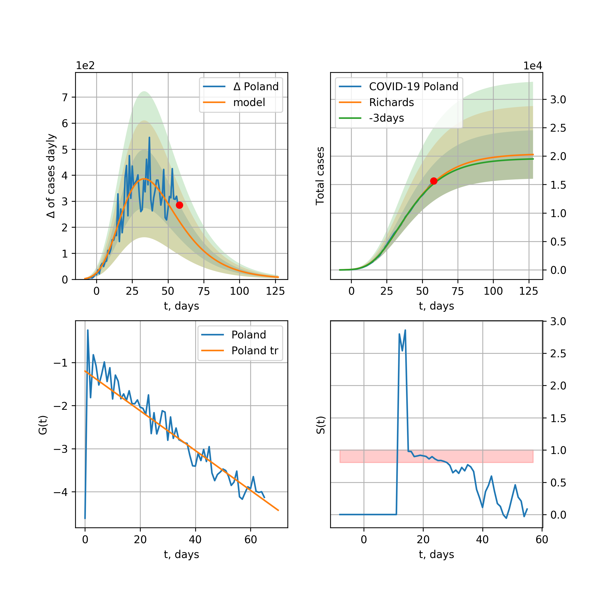
Poland data at: 2020-05-09
+3 day model MAPE: 0.014611
model: Richards
coeffs: [ 2.04335999e+04 4.00051186e+00 -5.03416923e+01 1.29187459e-02]
rational stdev: 0.210147
forecast at the end of period: +70 days
deltaDaycases: 8
total cases: 20277 ± 4261
total death: 1017 ± 641
trend coefficient of determination: 0.754256
intercept: -1.198196
slope: -0.046158
UAE
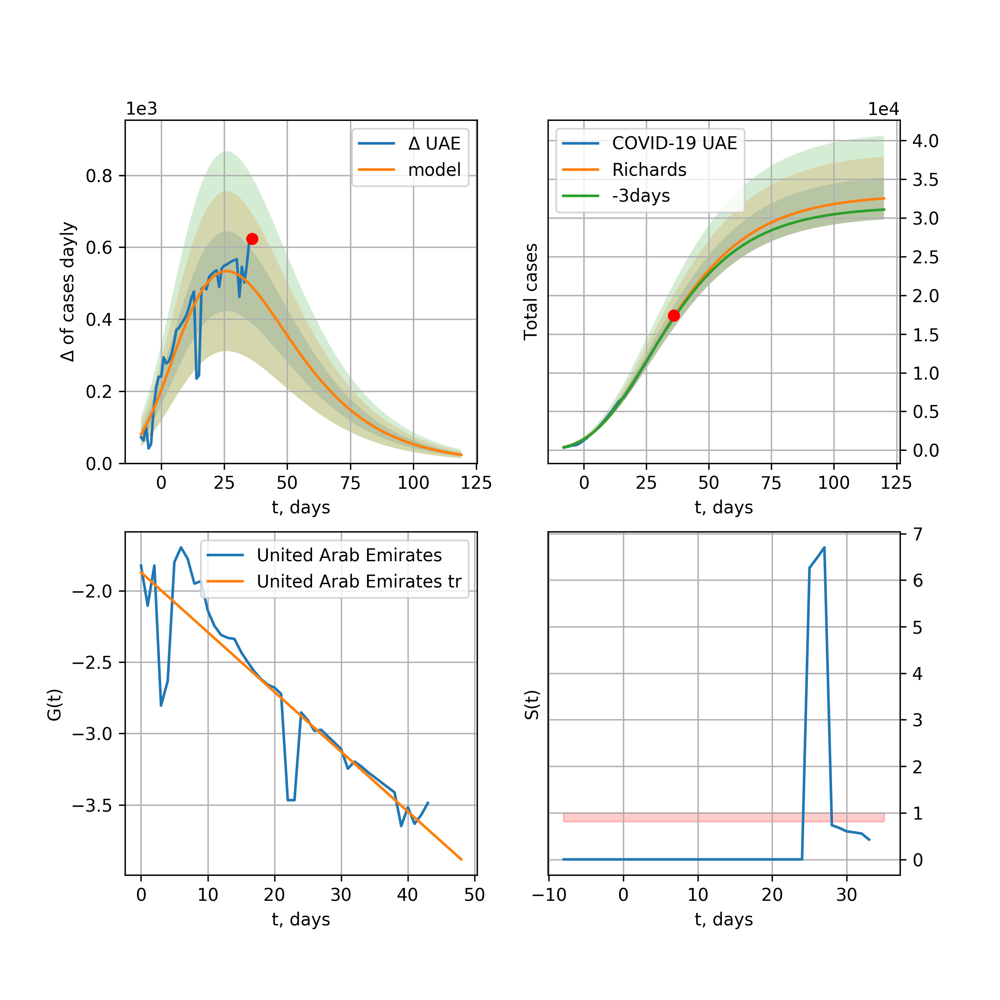
UAE data at: 2020-05-09
+3 day model MAPE: 0.009952
model: Richards
coeffs: [ 3.30220707e+04 2.73880639e+00 -6.67043283e+01 1.61718504e-02]
rational stdev: 0.083198
forecast at the end of period: +84 days
deltaDaycases: 23
total cases: 32503 ± 2704
total death: 345 ± 86
trend coefficient of determination: 0.825237
intercept: -1.870984
slope: -0.041909
Romania

Romania data at: 2020-05-09
+3 day model MAPE: 0.018940
model: Richards
coeffs: [ 1.98750731e+04 4.68699447e+00 -5.49402036e+01 1.09169535e-02]
rational stdev: 0.111749
forecast at the end of period: +70 days
deltaDaycases: 8
total cases: 19710 ± 2202
total death: 1223 ± 410
trend coefficient of determination: 0.851444
intercept: -1.262950
slope: -0.045236
Ukraine

Ukraine data at: 2020-05-09
+3 day model MAPE: 0.007932
model: Richards
coeffs: [2.37027001e+04 2.14202345e-01 1.97978942e+01 3.20482818e-01]
rational stdev: 0.277293
forecast at the end of period: +98 days
deltaDaycases: 0
total cases: 23689 ± 6568
total death: 605 ± 503
trend coefficient of determination: 0.786528
intercept: -2.599520
slope: -0.078736
Indonesia
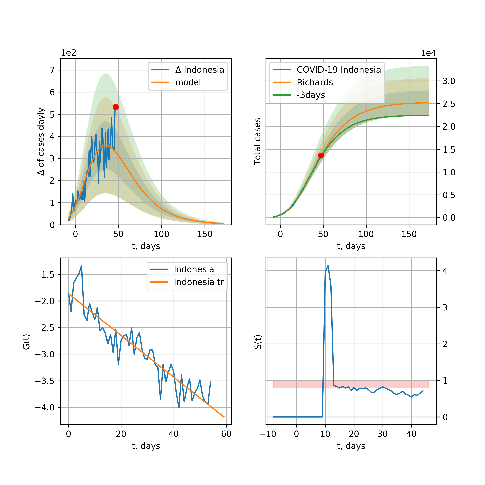
Indonesia data at: 2020-05-09
+3 day model MAPE: 0.016413
model: Richards
coeffs: [ 2.53061332e+04 1.37186598e+00 -5.52563018e+01 2.85203650e-02]
rational stdev: 0.107282
forecast at the end of period: +126 days
deltaDaycases: 4
total cases: 25189 ± 2702
total death: 1770 ± 569
trend coefficient of determination: 0.849782
intercept: -1.863305
slope: -0.039272
Bangladesh
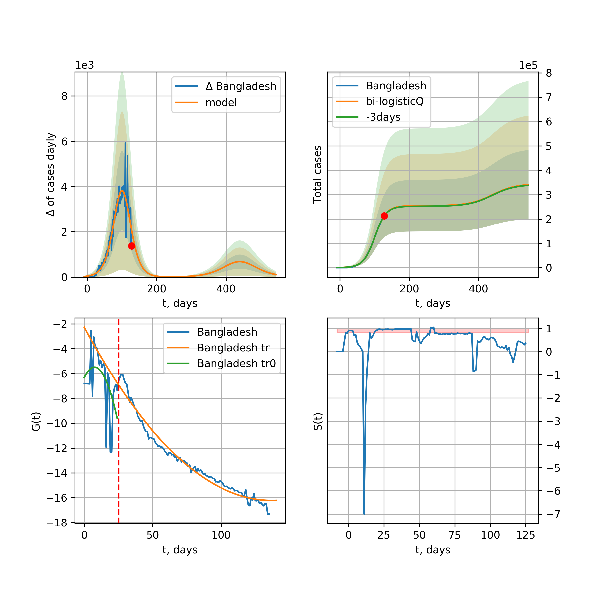
Bangladesh data at: 2020-05-09
+3 day model MAPE: 0.121997
model: bi-logisticQ
coeffs: [ 1.52576917e+04 4.82282721e-06 4.47207282e+01 -3.35831063e+04]
S.Korea scenario coeffs: [0.35416971, 0.02606324, 4.35859408, 19.30413219]
rational stdev: 0.301595
forecast at the end of period: +42 days
deltaDaycases: 1
total cases: 15305 ± 4616
total death: 237 ± 214
bi-logisticQ approximation splitting point: 25
trend coefficient of determination: 0.232653
intercept_: -6.325425729788838
coeffs_: [ 0. 0.22449345 -0.0150245 ]
trend coefficient of determination: 0.980575
intercept_: 3.92534182185733
coeffs_: [ 0. -0.4635868 0.00319602]
South_Korea

South Korea data at: 2020-05-09
+3 day model MAPE: 0.001345
model: bi-logisticQ
coeffs: [ 2.84903527e+03 1.55764813e-06 3.13018550e+01 -1.12257972e+05]
rational stdev: 0.130904
forecast at the end of period: +14 days
deltaDaycases: 0
total cases: 10749 ± 1407
total death: 253 ± 99
bi-logisticQ approximation splitting point: 25
trend coefficient of determination: 0.936575
intercept_: -5.550309986859278
coeffs_: [ 0. -0.32029791 -0.00074495]
trend coefficient of determination: 0.742175
intercept_: -10.212452475644078
coeffs_: [ 0. -0.11450291 0.00040333]
Denmark
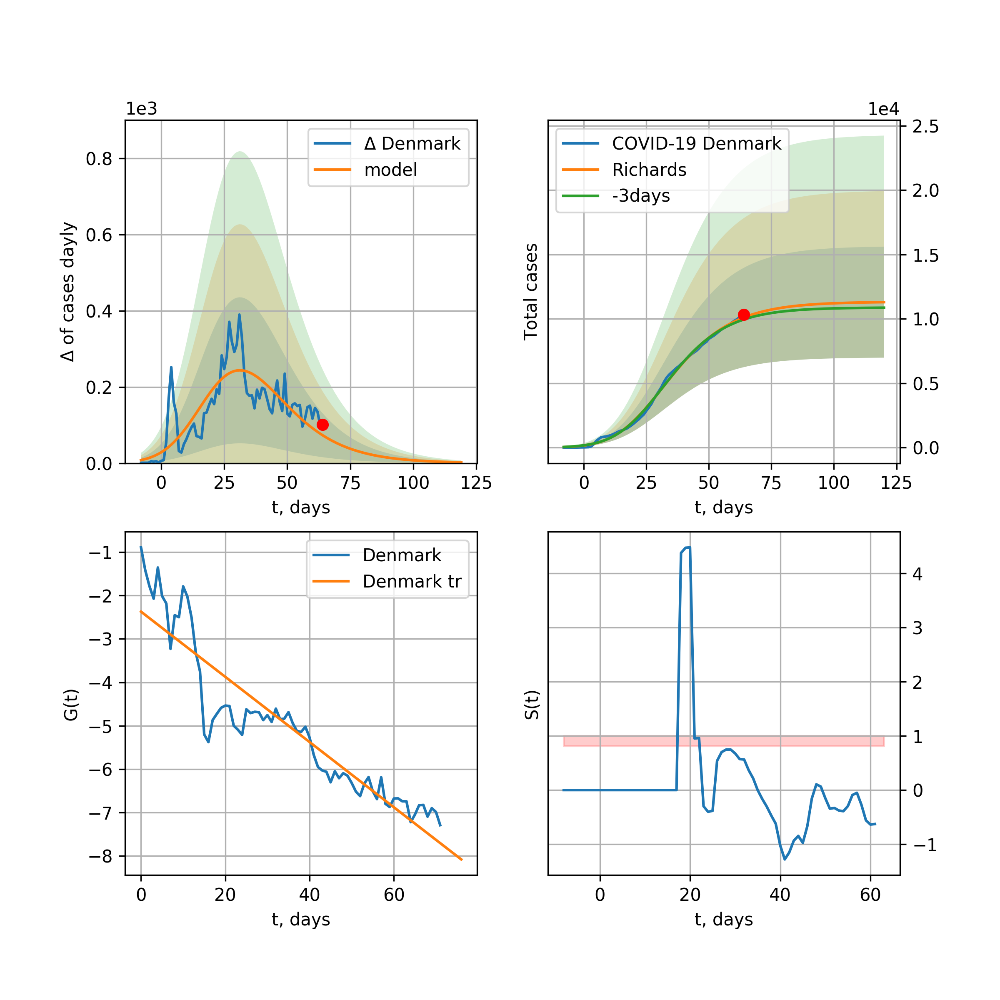
Denmark data at: 2020-05-09
+3 day model MAPE: 0.016869
model: Richards
coeffs: [1.13245732e+04 2.31836894e-01 1.30862364e+01 2.88159650e-01]
rational stdev: 0.381731
forecast at the end of period: +56 days
deltaDaycases: 2
total cases: 11293 ± 4311
total death: 575 ± 658
trend coefficient of determination: 0.858550
intercept: -2.372446
slope: -0.075088
Serbia

Serbia data at: 2020-05-09
+3 day model MAPE: 0.008552
model: logisticQ
coeffs: [ 1.02728330e+04 2.64918334e-06 2.90004275e+01 -5.29969892e+04]
S.Korea scenario coeffs: [0.35416971, 0.02606324, 4.35859408, 19.30413219]
rational stdev: 0.279596
forecast at the end of period: +140 days
deltaDaycases: 2
total cases: 13876 ± 3879
total death: 294 ± 246
trend coefficient of determination: 0.970208
intercept_: -4.022105008715947
coeffs_: [ 0. -0.2666966 0.00170755]
Philippines
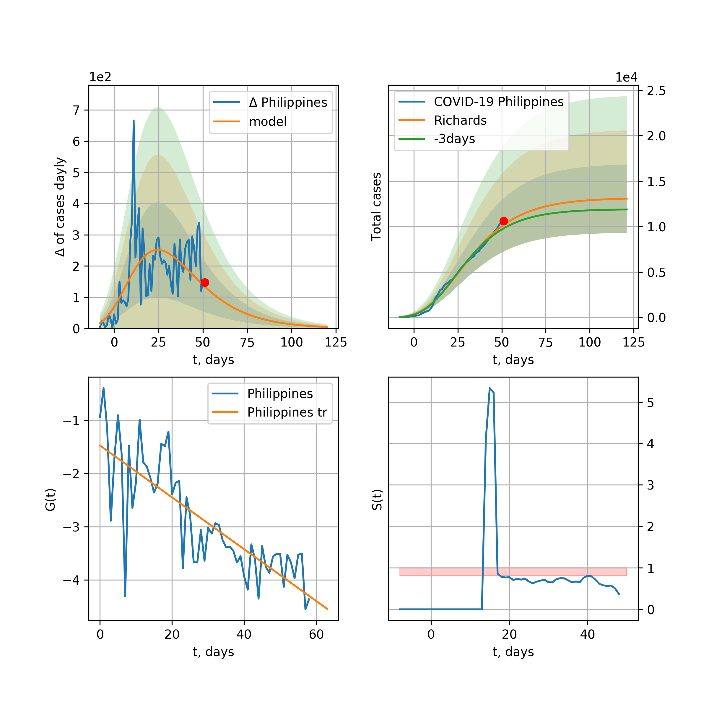
Philippines data at: 2020-05-09
+3 day model MAPE: 0.040204
model: Richards
coeffs: [ 1.31624983e+04 5.49837290e+00 -6.40775454e+01 9.49654923e-03]
rational stdev: 0.287634
forecast at the end of period: +70 days
deltaDaycases: 4
total cases: 13074 ± 3760
total death: 867 ± 748
trend coefficient of determination: 0.642888
intercept: -1.474365
slope: -0.048767
Norway
Norway data at: 2020-05-09
+3 day model MAPE: 0.005798
model: Richards
coeffs: [ 8.18597327e+03 8.87865963e-01 -9.40391573e+00 9.15144357e-02]
rational stdev: 0.218633
forecast at the end of period: +42 days
deltaDaycases: 0
total cases: 8178 ± 1788
total death: 221 ± 144
trend coefficient of determination: 0.930230
intercept: -1.226921
slope: -0.077563
Czechia

Czechia data at: 2020-05-09
+3 day model MAPE: 0.012806
model: logisticQ
coeffs: [ 7.76811401e+03 9.21480655e-07 2.48502631e+01 -1.53437692e+05]
S.Korea scenario coeffs: [0.35416971, 0.02606324, 4.35859408, 19.30413219]
rational stdev: 0.341953
forecast at the end of period: +98 days
deltaDaycases: 5
total cases: 10446 ± 3572
total death: 356 ± 365
trend coefficient of determination: 0.914586
intercept_: -3.933536248804055
coeffs_: [ 0. -0.28669447 0.00198411]
Colombia
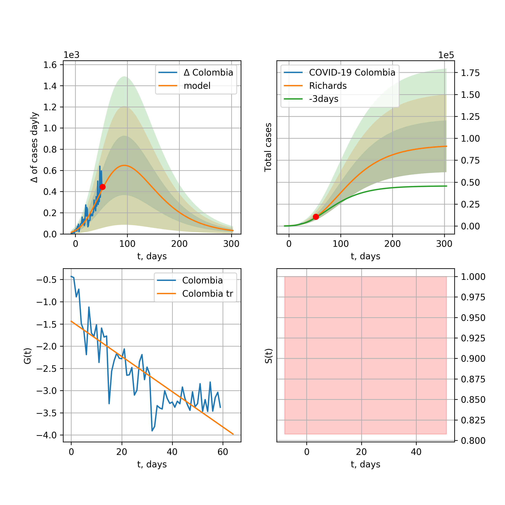
Colombia data at: 2020-05-09
+3 day model MAPE: 0.055514
model: Richards
coeffs: [ 9.25520601e+04 8.35580687e-01 -1.01611678e+02 2.30100358e-02]
rational stdev: 0.324898
forecast at the end of period: +252 days
deltaDaycases: 31
total cases: 90916 ± 29538
total death: 3854 ± 3756
trend coefficient of determination: 0.675706
intercept: -1.439961
slope: -0.039651
Australia

Australia data at: 2020-05-09
+3 day model MAPE: 0.004056
model: logisticQ
coeffs: [ 6.70068453e+03 2.28178843e-06 1.82137361e+01 -9.87426849e+04]
S.Korea scenario coeffs: [0.35416971, 0.02606324, 4.35859408, 19.30413219]
rational stdev: 0.154489
forecast at the end of period: +84 days
deltaDaycases: 0
total cases: 9072 ± 1401
total death: 126 ± 58
trend coefficient of determination: 0.970196
intercept_: -4.560538688716139
coeffs_: [ 0. -0.29093094 0.00193322]
Malaysia

Malaysia data at: 2020-05-09
+3 day model MAPE: 0.015833
model: logisticQ
coeffs: [ 6.30213701e+03 1.00924092e-06 2.83159519e+01 -1.23412633e+05]
S.Korea scenario coeffs: [0.35416971, 0.02606324, 4.35859408, 19.30413219]
rational stdev: 0.332799
forecast at the end of period: +98 days
deltaDaycases: 10
total cases: 8351 ± 2779
total death: 136 ± 135
trend coefficient of determination: 0.853011
intercept_: -4.375122785576974
coeffs_: [ 0. -0.25393352 0.00174466]
Egypt
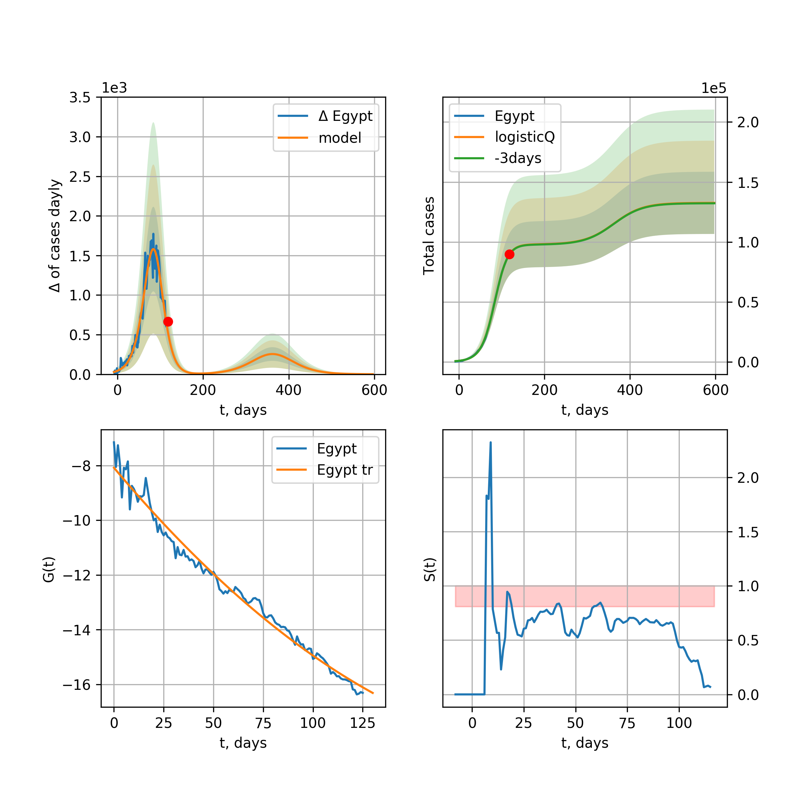
Egypt data at: 2020-05-09
+3 day model MAPE: 0.070796
model: logisticQ
coeffs: [ 1.72068496e+04 3.37360343e-05 4.39054647e+01 -2.28302946e+03]
S.Korea scenario coeffs: [0.35416971, 0.02606324, 4.35859408, 19.30413219]
rational stdev: 0.163745
forecast at the end of period: +196 days
deltaDaycases: 27
total cases: 22504 ± 3685
total death: 1290 ± 633
trend coefficient of determination: 0.942712
intercept_: -7.516513107439081
coeffs_: [ 0. -0.1388606 0.00097096]
Finland

Finland data at: 2020-05-09
+3 day model MAPE: 0.008967
model: Richards
coeffs: [ 7.60131290e+03 2.92168395e+00 -6.05671007e+01 1.59362471e-02]
rational stdev: 0.176131
forecast at the end of period: +84 days
deltaDaycases: 1
total cases: 7559 ± 1331
total death: 340 ± 179
trend coefficient of determination: 0.815503
intercept: -1.555638
slope: -0.047385
Morocco

Morocco data at: 2020-05-09
+3 day model MAPE: 0.042802
model: logisticQ
coeffs: [ 6.41961651e+03 2.81811520e-06 2.93678280e+01 -3.91892303e+04]
S.Korea scenario coeffs: [0.35416971, 0.02606324, 4.35859408, 19.30413219]
rational stdev: 0.259220
forecast at the end of period: +126 days
deltaDaycases: 9
total cases: 8520 ± 2208
total death: 268 ± 208
trend coefficient of determination: 0.969894
intercept_: -4.898233355115407
coeffs_: [ 0. -0.25743392 0.00227727]
Argentina
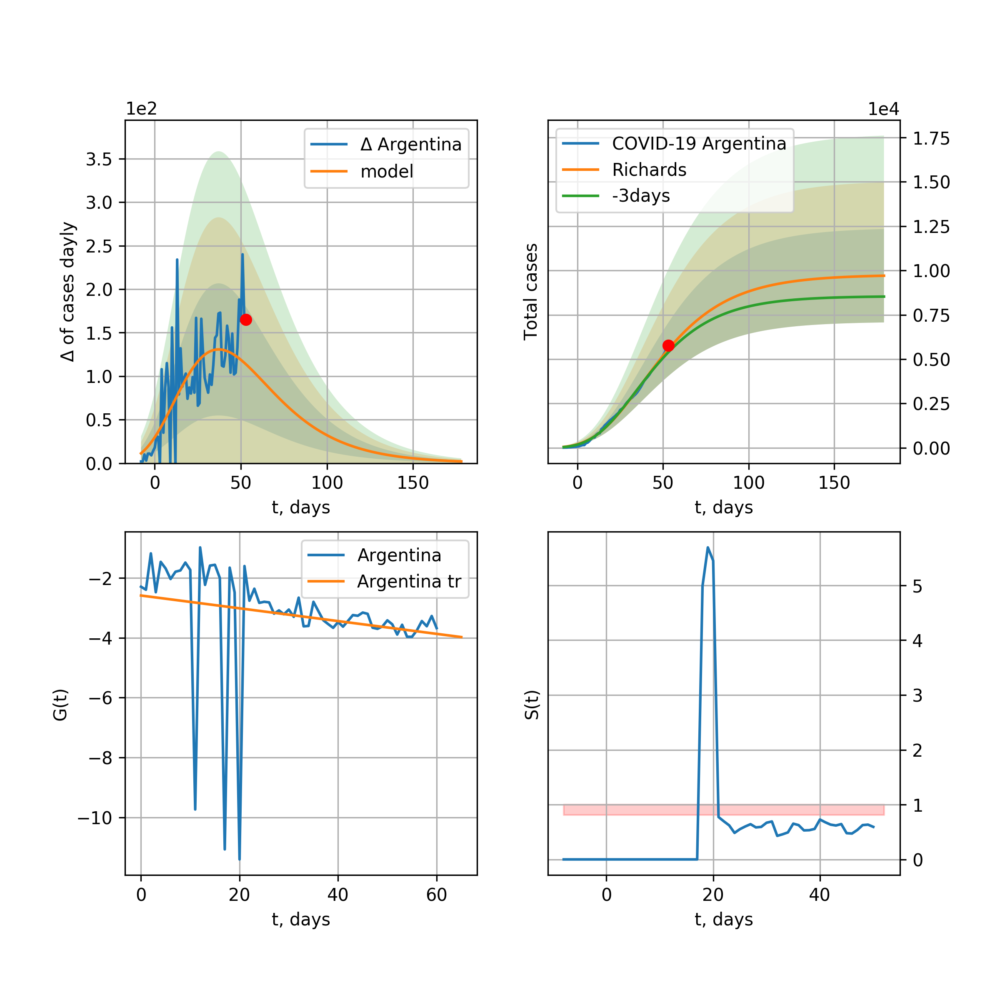
Argentina data at: 2020-05-09
+3 day model MAPE: 0.032653
model: Richards
coeffs: [ 9.75763769e+03 2.65086381e+00 -7.91515378e+01 1.38368104e-02]
rational stdev: 0.271304
forecast at the end of period: +126 days
deltaDaycases: 2
total cases: 9703 ± 2632
total death: 503 ± 409
trend coefficient of determination: 0.039517
intercept: -2.586932
slope: -0.021358
Algeria

Algeria data at: 2020-05-09
+3 day model MAPE: 0.059309
model: logisticQ
coeffs: [ 7.36178776e+03 1.38359023e-06 3.39173517e+01 -5.68126260e+04]
S.Korea scenario coeffs: [0.35416971, 0.02606324, 4.35859408, 19.30413219]
rational stdev: 0.275710
forecast at the end of period: +154 days
deltaDaycases: 10
total cases: 9675 ± 2667
total death: 859 ± 710
trend coefficient of determination: 0.938277
intercept_: -6.266773462470054
coeffs_: [ 0. -0.21603869 0.00210596]
Luxembourg

Luxembourg data at: 2020-05-09
+3 day model MAPE: 0.003821
model: Richards
coeffs: [ 3.83223101e+03 1.65022451e+01 -3.21311188e+01 6.96795523e-03]
rational stdev: 0.499694
forecast at the end of period: +56 days
deltaDaycases: 0
total cases: 3832 ± 1914
total death: 99 ± 148
trend coefficient of determination: 0.559165
intercept: -1.560227
slope: -0.076691
Thailand

Thailand data at: 2020-05-09
+3 day model MAPE: 0.003154
model: Richards
coeffs: [ 2.97954321e+03 1.44986767e+01 -3.65531733e+01 8.63181841e-03]
rational stdev: 0.094211
forecast at the end of period: +14 days
deltaDaycases: 0
total cases: 2977 ± 280
total death: 55 ± 15
trend coefficient of determination: 0.869458
intercept: -1.259140
slope: -0.116939
Hungary

Hungary data at: 2020-05-09
+3 day model MAPE: 0.002547
model: logisticQ
coeffs: [ 3.51118191e+03 2.95310905e-06 3.39612551e+01 -3.80108288e+04]
S.Korea scenario coeffs: [0.35416971, 0.02606324, 4.35859408, 19.30413219]
rational stdev: 0.297328
forecast at the end of period: +154 days
deltaDaycases: 2
total cases: 4718 ± 1402
total death: 597 ± 532
trend coefficient of determination: 0.977444
intercept_: -3.3860665792807136
coeffs_: [ 0. -0.24262581 0.00159169]
Greece

Greece data at: 2020-05-09
+3 day model MAPE: 0.008758
model: logisticQ
coeffs: [ 2.62969310e+03 1.07698462e-06 2.34804034e+01 -1.15307907e+05]
S.Korea scenario coeffs: [0.35416971, 0.02606324, 4.35859408, 19.30413219]
rational stdev: 0.276020
forecast at the end of period: +98 days
deltaDaycases: 1
total cases: 3536 ± 976
total death: 197 ± 163
trend coefficient of determination: 0.940435
intercept_: -3.2998526600425553
coeffs_: [ 0. -0.30530759 0.00236747]
Iraq

Iraq data at: 2020-05-09
+3 day model MAPE: 0.029987
model: bi-logisticQ
coeffs: [ 1.32421541e+03 8.97509285e-06 4.11258396e+01 -2.61853822e+04]
rational stdev: 0.075749
forecast at the end of period: +126 days
deltaDaycases: 0
total cases: 2819 ± 213
total death: 112 ± 25
bi-logisticQ approximation splitting point: 42
trend coefficient of determination: 0.938502
intercept_: -6.116864757771229
coeffs_: [ 0. -0.176838 0.00090835]
trend coefficient of determination: 0.374870
intercept_: -12.060900500372624
coeffs_: [ 0. 0.08008914 -0.0012873 ]
Croatia

Croatia data at: 2020-05-09
+3 day model MAPE: 0.007830
model: logisticQ
coeffs: [ 2.10901466e+03 1.17984098e-06 2.65498743e+01 -1.22938761e+05]
S.Korea scenario coeffs: [0.35416971, 0.02606324, 4.35859408, 19.30413219]
rational stdev: 0.328136
forecast at the end of period: +112 days
deltaDaycases: 0
total cases: 2845 ± 933
total death: 113 ± 111
trend coefficient of determination: 0.978244
intercept_: -2.2152449676395936
coeffs_: [ 0. -0.28125798 0.00174166]
Iceland

Iceland data at: 2020-05-09
+3 day model MAPE: 0.000029
model: logisticQ
coeffs: [ 1.80196106e+03 9.52672363e-06 1.33193786e+01 -1.85987822e+04]
rational stdev: 0.065620
forecast at the end of period: +42 days
deltaDaycases: 0
total cases: 1801 ± 118
total death: 10 ± 1
trend coefficient of determination: 0.940651
intercept_: -5.797807936004534
coeffs_: [ 0. -0.16825284 -0.0002015 ]
Estonia
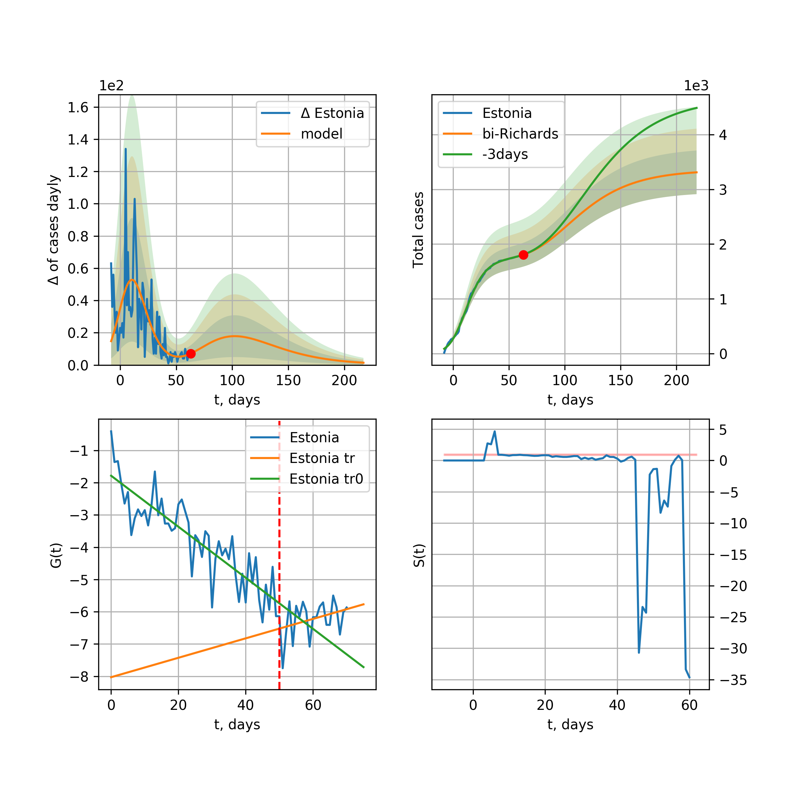
Estonia data at: 2020-05-09
+3 day model MAPE: 0.000915
model: Richards
coeffs: [1.76291375e+03 2.14374182e-01 3.20988091e+00 4.62755650e-01]
rational stdev: 0.133140
forecast at the end of period: +28 days
deltaDaycases: 0
total cases: 1760 ± 234
total death: 60 ± 23
trend coefficient of determination: 0.851605
intercept: -4.067741
slope: -0.100721
Bulgaria

Bulgaria data at: 2020-05-09
+3 day model MAPE: 0.011824
model: logisticQ
coeffs: [ 2.74498204e+03 3.08658886e-06 3.53923959e+01 -2.32195489e+04]
S.Korea scenario coeffs: [0.35416971, 0.02606324, 4.35859408, 19.30413219]
rational stdev: 0.174940
forecast at the end of period: +203 days
deltaDaycases: 1
total cases: 3687 ± 645
total death: 169 ± 88
trend coefficient of determination: 0.903023
intercept_: -5.929558128455415
coeffs_: [ 0. -0.19795472 0.00195299]
New Zealand

New Zealand data at: 2020-05-09
+3 day model MAPE: 0.002405
model: logisticQ
coeffs: [ 1.46814946e+03 3.64168458e-06 2.48853448e+01 -6.81641270e+04]
S.Korea scenario coeffs: [0.35416971, 0.02606324, 4.35859408, 19.30413219]
rational stdev: 0.361241
forecast at the end of period: +98 days
deltaDaycases: 0
total cases: 1987 ± 717
total death: 27 ± 29
trend coefficient of determination: 0.861027
intercept_: -3.903998668158285
coeffs_: [ 0. -0.14475959 -0.00036157]
Slovenia

Slovenia data at: 2020-05-09
+3 day model MAPE: 0.005027
model: bi-logisticQ
coeffs: [ 1.20287212e+03 9.15174143e-07 1.91335232e+01 -1.69103626e+05]
S.Korea scenario coeffs: [0.35416971, 0.02606324, 4.35859408, 19.30413219]
rational stdev: 0.223919
forecast at the end of period: +84 days
deltaDaycases: 0
total cases: 1842 ± 412
total death: 127 ± 85
bi-logisticQ approximation splitting point: 10
trend coefficient of determination: 0.968209
intercept_: -2.53431844604435
coeffs_: [ 0. -0.45029183 -0.00732028]
trend coefficient of determination: 0.907627
intercept_: -6.759979885798388
coeffs_: [ 0.00000000e+00 -1.15026408e-01 -1.36557959e-05]
Slovakia
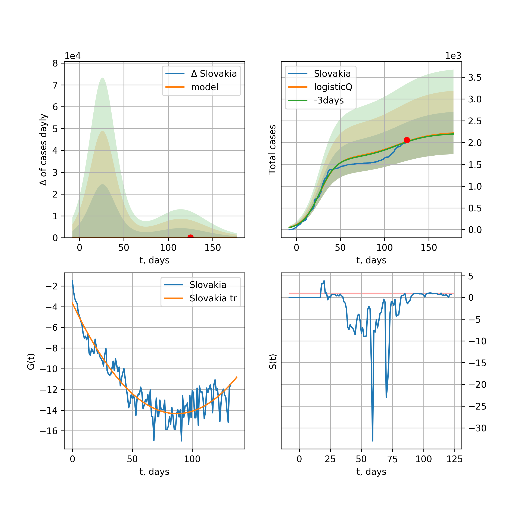
Slovakia data at: 2020-05-08
+3 day model MAPE: 0.006651
model: logisticQ
coeffs: [ 1.48846253e+03 5.51251211e-04 2.38238166e+01 -2.20367801e+02]
S.Korea scenario coeffs: [0.35416971, 0.02606324, 4.35859408, 19.30413219]
rational stdev: 0.276111
forecast at the end of period: +127 days
deltaDaycases: 0
total cases: 2010 ± 555
total death: 35 ± 28
trend coefficient of determination: 0.909929
intercept_: -3.2618318406075604
coeffs_: [ 0. -0.28551703 0.00211129]
Lithuania

Lithuania data at: 2020-05-08
+3 day model MAPE: 0.007864
model: logisticQ
coeffs: [ 1.41997026e+03 8.23758448e-07 1.87716829e+01 -1.65022416e+05]
S.Korea scenario coeffs: [0.35416971, 0.02606324, 4.35859408, 19.30413219]
rational stdev: 0.351442
forecast at the end of period: +71 days
deltaDaycases: 1
total cases: 1894 ± 665
total death: 64 ± 67
trend coefficient of determination: 0.967195
intercept_: -1.6847406455830347
coeffs_: [ 0. -0.39461988 0.00363381]
Latvia

Latvia data at: 2020-05-09
+3 day model MAPE: 0.020898
model: logisticQ
coeffs: [ 8.83921937e+02 5.84837509e-07 1.91923173e+01 -2.06125173e+05]
S.Korea scenario coeffs: [0.35416971, 0.02606324, 4.35859408, 19.30413219]
rational stdev: 0.302263
forecast at the end of period: +84 days
deltaDaycases: 0
total cases: 1186 ± 358
total death: 22 ± 19
trend coefficient of determination: 0.757841
intercept_: -3.6146837749662577
coeffs_: [ 0. -0.2776324 0.00243583]
Cyprus

Cyprus data at: 2020-05-09
+3 day model MAPE: 0.006618
model: logisticQ
coeffs: [ 8.72596917e+02 2.18747163e-06 1.61487966e+01 -6.87164516e+04]
S.Korea scenario coeffs: [0.35416971, 0.02606324, 4.35859408, 19.30413219]
rational stdev: 0.179379
forecast at the end of period: +84 days
deltaDaycases: 0
total cases: 1179 ± 211
total death: 19 ± 10
trend coefficient of determination: 0.846536
intercept_: -4.4530536051125384
coeffs_: [ 0. -0.229072 0.00156102]
Malta
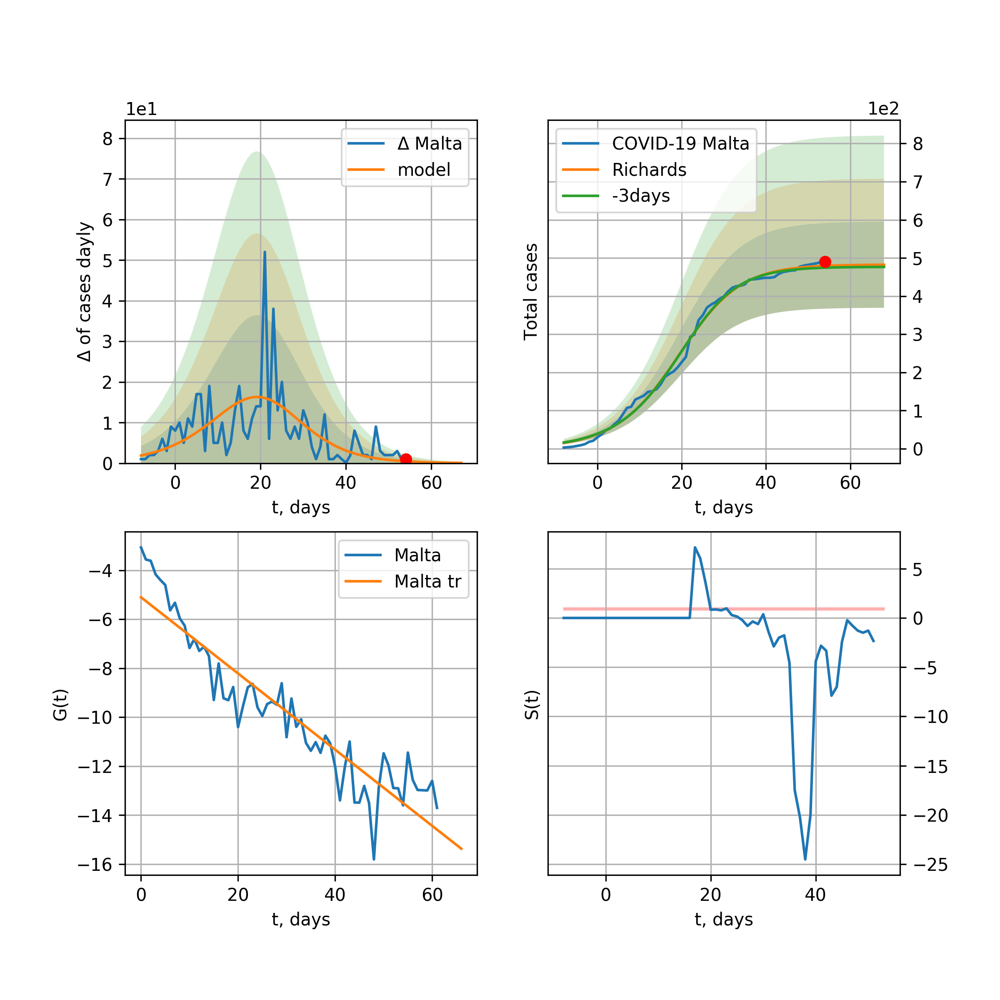
Malta data at: 2020-05-09
+3 day model MAPE: 0.010489
model: Richards
coeffs: [4.82680532e+02 1.18764446e-01 2.09862915e+01 1.21221444e+00]
rational stdev: 0.233965
forecast at the end of period: +14 days
deltaDaycases: 0
total cases: 482 ± 112
total death: 4 ± 2
trend coefficient of determination: 0.862180
intercept: -5.102627
slope: -0.155566
Sri Lanka

Sri Lanka data at: 2020-05-09
+3 day model MAPE: 0.062838
model: bi-logisticQ
coeffs: [ 5.18033887e+02 4.95277952e-03 3.80543331e+01 -3.87676409e+01]
S.Korea scenario coeffs: [0.35416971, 0.02606324, 4.35859408, 19.30413219]
rational stdev: 0.261390
forecast at the end of period: +210 days
deltaDaycases: 0
total cases: 917 ± 239
total death: 9 ± 7
bi-logisticQ approximation splitting point: 35
trend coefficient of determination: 0.700900
intercept_: -1.7291427146735243
coeffs_: [ 0. -0.62059696 0.01251448]
trend coefficient of determination: 0.356970
intercept_: -45.35102800084556
coeffs_: [ 0. 1.68688112 -0.01943157]
References
- Worldometers COVID-19 Coronavirus Pandemic
- Su COVID-19 susijusi gyventojų ir verslo statistika
- Bi-logistic growth
- Least squares
- scikit-learn
- scipy.org
- European Centre for Disease Prevention and Control An agency of the European Union
- Aaron Miller, Mac Josh Reandelar, Kimberly Fasciglione, Violeta Roumenova, Yan Li, Gonzalo H Otazu, Correlation between universal BCG vaccination policy and reduced morbidity and mortality for COVID-19: an epidemiological study, https://doi.org/10.1101/2020.03.24.20042937